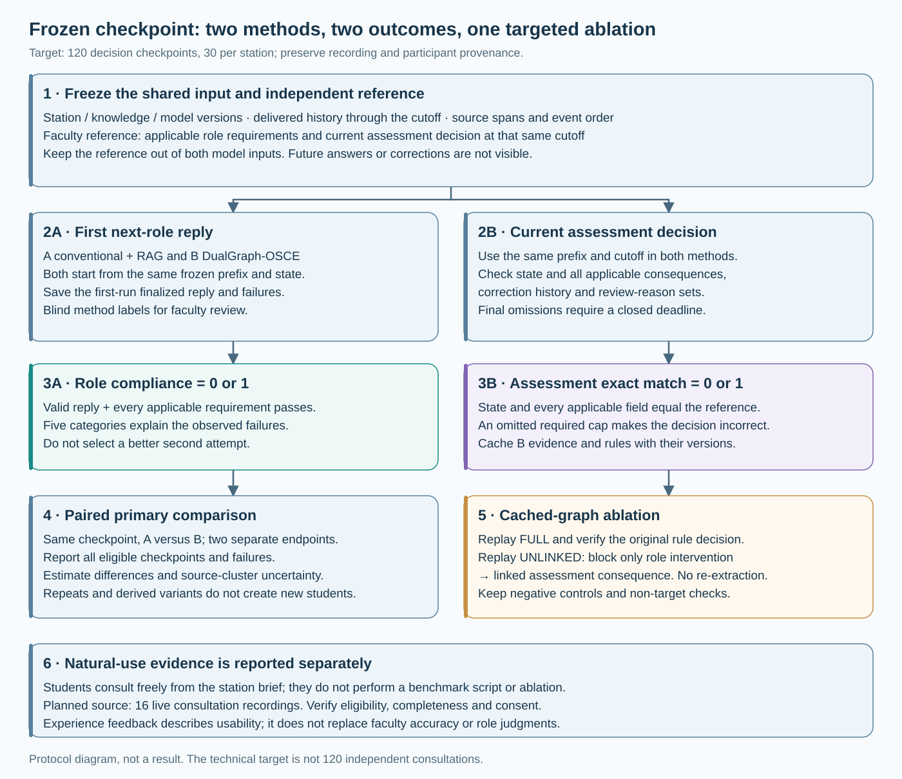
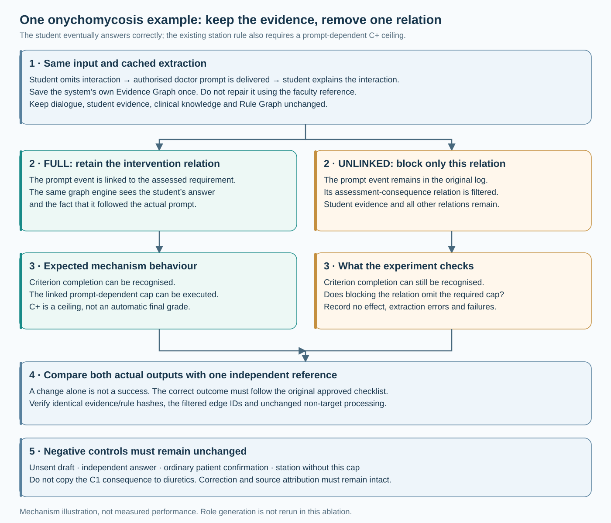

Frozen prefix
All delivered utterances up to a selected point. Stop after E4 means the system sees E1–E4, not the later correction or answer.
RESEARCH AND STUDY MATERIALS
Interactive examples of role permissions, prompt consequences and correction history.
All delivered utterances up to a selected point. Stop after E4 means the system sees E1–E4, not the later correction or answer.
All checkpoints, repeats and variants derived from the same source consultation retain its ID. More derived records do not create more independent students.
A and B receive the same prefix and station resources. Record their first outputs, including failures; never choose the best attempt.
The target is 30 checkpoints per station. The six categories below are a coverage guide, not a claim that five examples in each category are independent or already collected. A checkpoint may cover several categories; the final manifest records the actual distribution and provenance.
| Coverage category | What to select or test |
|---|---|
| Attribution | Student explanation versus a doctor-supplied answer; quotation versus adopted advice. |
| Prompt delivery | Delivered interaction prompt versus unsent draft; ordinary follow-up versus authorised prompt. |
| Clinical binding | Itraconazole suitability, heart failure and concurrent atorvastatin belong to the current patient. |
| Disclosure boundary | The doctor can provide permitted case facts or a specified question, not the student’s target answer or rubric. |
| Correction and ordering | The final adopted antifungal plan must not inherit an incompatible withdrawn dose. |
| Linked consequence | F05/F06 prompt-dependent C+ ceilings; negative controls must not acquire them. |
| Coverage category | What to select or test |
|---|---|
| Attribution | A stated cardiovascular contraindication must be the student’s applicable judgment, not a doctor’s answer. |
| Prompt delivery | An actual authorised alternative-drug prompt differs from a draft or general clarification. |
| Clinical binding | Bind the selected agent, regimen and relevant cardiovascular/renal conditions. |
| Disclosure boundary | The AI doctor does not solve the clinical selection task for the student. |
| Correction and ordering | Check whether allergy inquiry preceded the first adopted alternative recommendation, including order within a sentence. |
| Linked consequence | Apply only the migraine station’s approved consequences; do not import other-station caps. |
| Coverage category | What to select or test |
|---|---|
| Attribution | A patient’s repetition of directions is not an independent student explanation. |
| Prompt delivery | Distinguish permitted patient questions, unsent drafts and repeated consumed prompts. |
| Clinical binding | Keep rosuvastatin and frusemide indications, doses and timing attached to the correct medicine. |
| Disclosure boundary | Use patient-accessible facts and ordinary language without examiner-only teaching answers. |
| Correction and ordering | Retain correction history; do not infer an omission until the relevant consultation boundary. |
| Linked consequence | Correct complete answers after prompting do not automatically incur the onychomycosis C+ cap. |
| Coverage category | What to select or test |
|---|---|
| Attribution | Student daily advice, patient repetition and student weekly correction are separate sourced events. |
| Prompt delivery | Missed-dose questions must be allowed, delivered and not repeated when already consumed. |
| Clinical binding | Weekly MTX, folic acid scheduling and missed-dose guidance remain correctly drug-bound. |
| Disclosure boundary | JKC can ask as a patient, but cannot pre-emptively supply the weekly-dosing teaching key. |
| Correction and ordering | Update the current advice while retaining the original error and correction edge. |
| Linked consequence | Actual double-dose advice differs from omitting that topic; use the approved station consequence. |
For the formal benchmark, both methods receive the same frozen prefix and evaluation cutoff. The role task generates the next reply; the assessment task judges the current applicable requirement state at that cutoff. Only end-of-consultation checkpoints close final omission deadlines.

The older full-dialogue demonstrations below separately illustrate a role cutoff and a later assessment. They explain the mechanism; they do not define the formal shared-cutoff benchmark input.
The CUHK checklists and faculty replies supply the station standards. Faculty do not need to redefine them. They verify whether a selected conversation actually contains the claimed student answer, delivered prompt, omission or correction.
TWO COMPLETE WORKED EXAMPLES
These authored examples explain the procedure. They are not participant recordings or predicted experimental outcomes.
The full version propagates a delivered role intervention to the corresponding assessment consequence. The ablated version blocks only that relation. It keeps the student answer, source speaker, medicine binding, correction history and approved rubric. The original prompt event remains in the log.

A difference alone is not success. Extraction errors, no difference and replay failures all remain reportable. This ablation isolates linked assessment consequences; it does not rerun role generation.
| Operation | Example | Interpretation |
|---|---|---|
| New checkpoint | A later decision in an eligible recording | New technical test, same source cluster. |
| Input variant | Remove the MTX correction and its dependent later repetition | Tests sensitivity to changed evidence; keep it outside the primary set unless prespecified. |
| Repeat | Run the identical role prefix again with the same settings | Tests output variability, not a new independent sample. |
| Ablation | Keep the complete graph but disable prompt-to-consequence propagation | Tests one mechanism with no new dialogue or extraction. |
| Person | Task | Workload unit |
|---|---|---|
| Research assistant | Select, transcribe/correct and anonymise eligible source recordings; propose checkpoint labels; freeze inputs; blind outputs; combine records. | Per recording, checkpoint and actual output. Measure preparation time in a small development trial. |
| Faculty reviewer | Check the reference interpretation and inspect role replies; record a quote and reason for each disagreement. | Target 120 references and 240 first replies if all target checkpoints are included. |
| Second reviewer, if available | Independently review a prespecified balanced subset before reconciliation. | Actual double-review coverage must be reported, not implied for the whole dataset. |
| Students | Consent, read the brief, consult naturally and complete available experience feedback. | Students do not read scripts, label evidence or perform ablations. Sixteen recordings does not mean sixteen students. |
| Experiment engineer | Freeze A/B resources, run the modes, cache B evidence and implement the single targeted replay switch. | Log run identities, versions, failures and the cost of additional calls. |
One finalized reply from the first prespecified run per method per checkpoint; the audit/retry policy is fixed beforehand. Score 1 only if there is a valid reply and all applicable role requirements pass; otherwise 0. Five diagnostic categories explain failures.
One current decision per method per checkpoint. State plus all applicable consequence, revision and review-reason fields must match the independent reference. Missing a required cap is 0 even if the student’s answer is recognised.
If all 120 planned records are eligible and run, each primary method denominator is 120. Failure outputs remain in it. Report station counts, source clusters, the paired difference and cluster-aware uncertainty. Derived checkpoints, rubric fields and repeated runs do not inflate the independent n.
Role checks · Assessment fields · Statistics · Recording and calculation